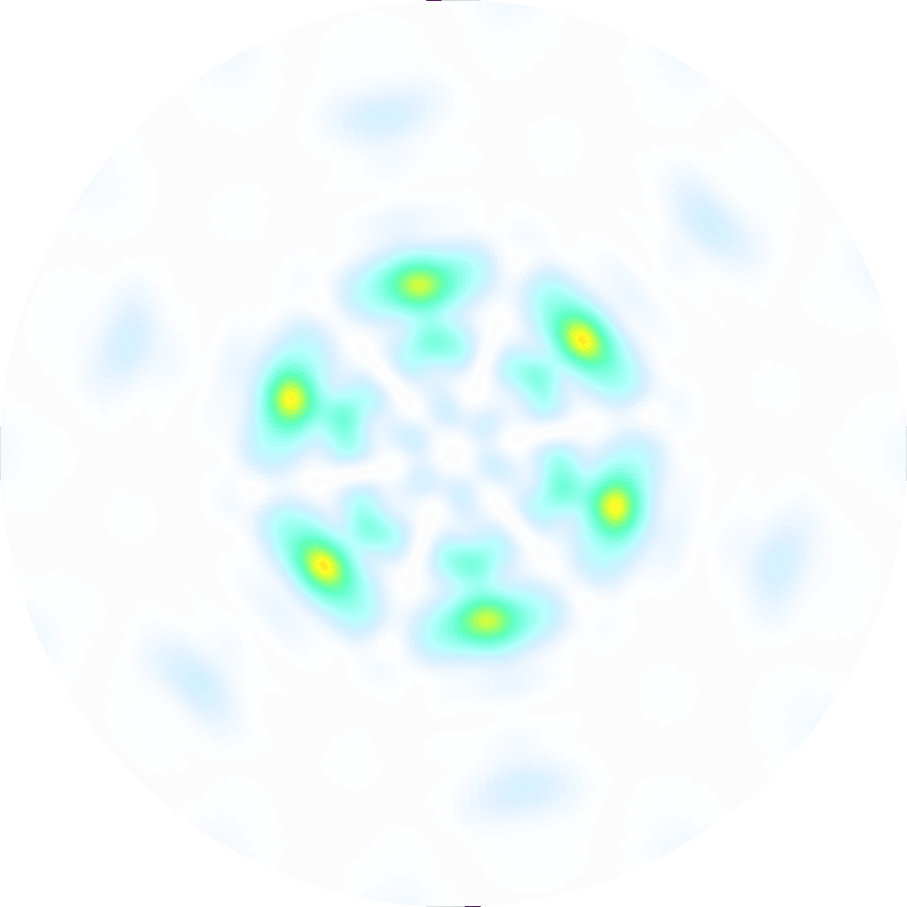
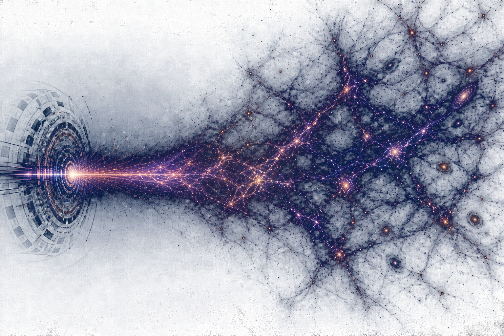

SCarFFF
Spherical, Cartesian and Fourier Form Factors. Code for the computation of form factors for scattering on molecules.

Welcome to my website! I'm a postdoctoral researcher in the Department of Mathematical Sciences at the University of Liverpool. My work focuses on relic neutrino searches, the use of atoms and molecules as light dark matter detectors, and broader dark matter and neutrino phenomenology.
I completed my PhD at Durham University under the supervision of Martin Bauer, working on the cosmic neutrino background. After spending two years overheating as a postdoc in Valencia, I came to Liverpool to work on novel dark matter detectors.
Take a look around. Here you'll find details of my research, software, and teaching activities, along with links to my papers and profiles. If you have any questions or want to chat about physics, feel free to reach out!

The ΛCDM model has successfully explained the measured primordial element abundances, the large scale structure of the universe, and the presence of the cosmic microwave background. Despite these successes, many questions remain. Notably, one firm prediction of the model, the cosmic neutrino background, remains elusive.
One key area of my research focuses on how we might detect the cosmic neutrino background. Due to the incredibly low energy of relic neutrinos, the detection techniques applied to higher energy neutrinos have no chance of seeing anything. Detecting relic neutrinos therefore requires a complete paradigm shift!
Below you will find some of the work I've done in this area.
Papers
More recently, I have been working on using atoms and molecules as targets for light dark matter and neutrino detection. These systems typically feature transitions from μeV to eV energies. Throguh scattering, these transitions are sensitive to MeV-mass dark matter, pushing well beyond current WIMP searches, whilst absorption processes let us search for ultralight dark matter. These systems are also symmetry-rich, allowing us to probe the microscopic nature of the operators that mediate the interactions.
Molecules are particular interesting due to their enormous combinatorics, which make almost any transition available in principle. The challenge is figuring out which targets are actually useful and accurately predicting their properties, which is notoriously challenging for multi-electron systems. My research focuses on using machine learning to find promising molecular targets, and on developing the formalism and numerical methods required to compute their properties at scale.
Below you will find some of the work I have done in this area. You can find the related code that I have written: CINCO for atomic transitions, and SCarFFF molecular form factors and rates, on the software page.
Papers
More broadly, my research concerns neutrino and dark matter phenomenology, especially light dark matter. Some examples of what I'm interested in include non-standard interactions, novel probes of new physics, especially involving quantum sensing, and precision early-universe simulations.
However, the above list is far from exhaustive! I'm always interested in learning new things, so if you have any interesting projects in mind, feel free to get in touch.
You can see some of the stuff that I've worked on below.
Papers
Calculations are hard! Fortunately I write code so that you don't have to do them.
Spherical, Cartesian and Fourier Form Factors. Code for the computation of form factors for scattering on molecules.

Code for the fast and precise computation of scattering amplitudes for dark-matter-induced transitions in hydrogenic ions.
Here you can find details of my teaching and outreach activities, along with links to my talks. I'm always interested in sharing my research, so please feel free to get in touch!
Students supervised
I co-supervise Javier Perez-Soler together with Avelino Vicente. His research focuses on neutrino mass models and all things group theory. He is expected to finish in 2027.
Lectures
I gave a three-part lecture series on cosmic neutrino background detectability at the EuCAPT Astroneutrino Theory Workshop in Prague, held from September 16 to September 27, 2024.
Outreach
I gave an invited outreach talk to undergraduates at Durham univeristy, A tour through time, where I explained the intricate relationship between particle physics and cosmology: seemingly disconnected physics on the smallest and largest scales.

Talks